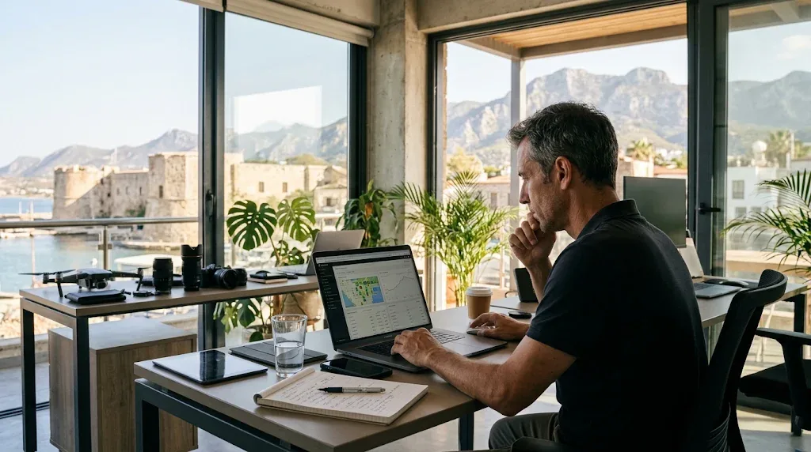

https://adavira.com/blog/girne-isletmeleri-icin-google-seo · 2026-11-08T22:25:22+00:00
Girne ve KKTC genelindeki yerel işletmelerin reklam bütçesi yakmadan Google aramalarında ve Haritalar’da ilk sıralara çıkması için sahada test edilmiş adımlar.

Girne’de bir işletme yönetiyorsanız müşteri kazanmanın kurallarının son yıllarda ne kadar değiştiğini bizzat görüyorsunuz. İster Alsancak’ta bir restoran işletin, ister Çatalköy’de bir emlak ofisi, ister merkezde bir klinik veya oto galeri; artık kapınızdan içeri girecek müşterilerin büyük çoğunluğu önce telefonunu çıkarıp Google’a danışıyor.
Üstelik Kıbrıs’ta arama alışkanlıkları iki farklı kitleye dayanıyor: Yıllardır adada yaşayan yerel halk ve Girne’ye yerleşen veya tatil için gelen yabancı kitle. Bu iki grubun ortak noktası ise karar verirken ilk karşılarına çıkan, güven veren ve bilgileri güncel olan işletmeleri tercih etmeleri. İşte tam bu noktada doğru kurgulanmış bir KKTC işletmeleri için arama motoru optimizasyonu çalışması, reklam bütçenizi sürekli artırmadan her gün yeni müşteri telefonu almanızı sağlar.
Bir kullanıcı telefonuna "Girne diş hekimi", "Girne araç kiralama" veya "Girne güzellik merkezi" yazdığında Google’ın en tepede gösterdiği yer klasik web siteleri değil, harita üzerindeki ilk üç işletmedir. Bölgesel hizmet veren bir marka için Girne Google Haritalar ve yerel SEO çalışmalarının eksiksiz olması, en değerli caddede dükkan açmakla eşdeğerdir.
Harita kaydınızı rakiplerinizin önüne geçirmek için şu üç detayı ihmal etmeyin:
Google artık masaüstü bilgisayarları değil, doğrudan cep telefonu deneyimini baz alarak sıralama veriyor. Girne’de mobil internet hızları değişkenlik gösterebildiği için, ağır görsellerle doldurulmuş ve geç açılan bir site ziyaretçiyi daha ilk 3 saniyede kaybettirir.
Başarılı bir Girne web tasarım ve hız optimizasyonu sürecinde; sayfanın anında yüklenmesi, menülerin karmaşık olmaması ve kullanıcının tek dokunuşla WhatsApp’tan yazabilmesi veya arama yapabilmesi gerekir. Hızlı ve temiz kodlanmış bir altyapı, rakiplerinizin önüne geçmenizde en büyük teknik avantajınızdır.
Birçok yerel işletme sitesinde yapılan en büyük hata, sunulan tüm hizmetlerin "Hizmetlerimiz" başlığı altında tek bir sayfaya madde madde yazılıp bırakılmasıdır. Google her bir hizmeti ayrı bir uzmanlık alanı olarak değerlendirir.
Örneğin bir güzellik merkeziyseniz lazer epilasyon, cilt bakımı ve bölgesel incelme için ayrı; bir otomotiv işletmesiyseniz araç satışı, filo kiralama ve ekspertiz için ayrı başlıklar ve açıklayıcı içerikler oluşturmalısınız. Müşterinin aradığı soruya doğrudan yanıt veren sayfalar her zaman üst sıraya tırmanır.
Kuzey Kıbrıs’taki müşteriler stok fotoğraflarla gerçek mekanları saniyeler içinde ayırt eder. Ekibinizin, ofisinizin veya tamamladığınız projelerin gerçek fotoğraflarını ve kısa tanıtım videolarını sitenize eklemek hem ziyaretçinin sayfada kalma süresini uzatır hem de Google’a işletmenizin gerçek ve güvenilir olduğunu kanıtlar.
AdaVira olarak Girne ve tüm KKTC genelindeki markalar için; dönüşüm odaklı web tasarım ve yazılım altyapısından, bölgenizde ilk sıralara yerleşmenizi sağlayan SEO ve yerel arama çalışmalarına, işletmenizin kalitesini yansıtan video ve drone prodüksiyon çekimlerinden sosyal medya yönetimi ve dijital reklam kampanyalarına kadar tüm süreci tek merkezden yönetiyoruz.
İşletmenizin Google’daki mevcut görünürlüğünü ve rakiplerinize göre durumunu ücretsiz analiz etmemizi isterseniz iletişim sayfamızdan bize ulaşabilirsiniz.